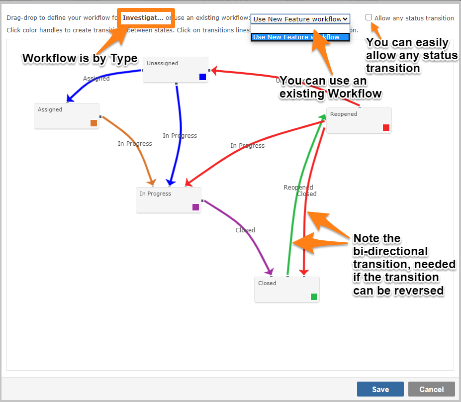

The goal is to get every item from creation to closure. This is workflow.
Once an item is created, you can determine the status transitions from that point to closure. The workflow editor allows you to draw your workflow:
You can drag-drop the boxes that represent the statuses around the screen. Left-click on a status and with the mouse depressed, draw an arrow to the status transition you wish to create
You must define every transition based on the arrow direction. If you wish to go backwards in your transitions, you must have an arrow pointing in that direction

You can restrict status transitions by User Group. Just click on the line of an arrow to be prompted for the User Group(s) allowed to make that status transition"